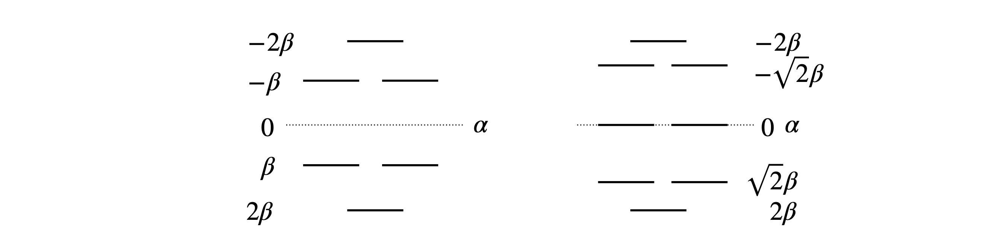
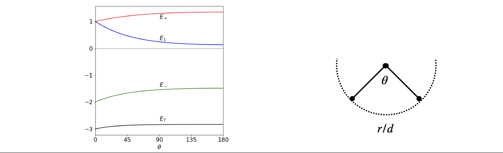
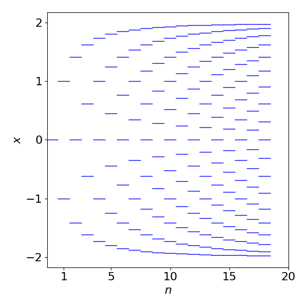

Solutions Q1 - 10
Contents
Solutions Q1 - 10#
# import all python add-ons etc that will be needed later on
%matplotlib inline
import numpy as np
import matplotlib.pyplot as plt
from sympy import *
import numpy.linalg as LA
init_printing() # allows printing of SymPy results in typeset maths format
plt.rcParams.update({'font.size': 14}) # set font size for plots
Q1 answer#
Expanding the determinant produces
Q2 answer#
The first term in the expansion element in the top left corner is zero hence only two terms appear in the result. The cofactor of \(y\) in the top row is \(\displaystyle -\begin{vmatrix} x & -z\\ x& 0 \end{vmatrix}=-xz\) and of \(z\) is \(\displaystyle \begin{vmatrix} x & 0\\ x& y \end{vmatrix}=xy\) hence
Q3 answer#
The characteristic polynomial is the polynomial resulting from expansion of the determinant and made equal to zero,
Factoring produces \((x-b)\left[ x(x+b)-a(a+b) \right]=0\) with the solution \(x=b\). The other solutions are found from the quadratic in square brackets. This produces \(x=-b -a\) and \(x=a\). Using Sympy is easy also, after factoring the solve step is really not necessary.
x, a, b = symbols('x, a, b')
M = Matrix( [ [x,a,b], [a,x,b], [a,b,x] ] )
char_eqn = M.det()
factor(char_eqn )
solve(char_eqn,x)
Q4 answer#
The \((2,3)\) element is the element in row \(2\), column \(3\) and is \(1\). The cofactor is the \(2 \times 2\) determinant not including the second row or third column, \(\displaystyle -\begin{vmatrix} a&b\\e&f\end{vmatrix}\). The minus sign is present because the first cofactor in a row or column if multiplied by \(+1\) and the second by \(-1\), the third by \(+1\) in an alternating pattern.
Q5 answer#
(a) As it is small construct the matrix directly and calculate the determinant as in the examples, section 2.5. The first calculation is a numerical evaluation using the numpy linear algebra package. The second used algebraic solution using SymPy. The numerical value is effectively zero being so small.
M = np.array( [ [1,2,3,4], [5,6,7,8], [9,10,11,12], [13,14,15,16] ] ) # numerical method
print(LA.det(M)) # LA calls linear algebra package defined at top of document
0.0
M = symbols('M') # symbolic algebra
M = Matrix( [ [1,2,3,4], [5,6,7,8], [9,10,11,12], [13,14,15,16] ] )
M.det()
The reason for this determinant being zero is seen in a determinant’s properties (Chapter 7.2.4). Subtracting the first row from the second, this row becomes \(4,4,4,4\). Similarly, subtracting the first row from the third, this becomes \(8, 8, 8, 8\) and the \(4\) and \(8\) can be removed and the whole determinant multiplied by \(32\). This leaves two rows the same, therefore the determinant is zero.
n = 4
M = np.zeros((n,n), dtype = int)
s = 1
for i in range(n):
for j in range(n):
M[i,j] = s
s = s + 1
print(LA.det(M)) # LA calls linear algebra package defined at top of document
0.0
This is a numerical answer, as opposed to an algebraic one, meaning that an numerical algorithm was used to evaluate it. The answer is sufficiently small to assume that it is zero.
Q6 answer#
The prime numbers have to be found first. The first prime is \(2\). The \(\mathtt{def\; isprime(n)}\) checks only as far as the square root since, if it has a larger factor, it also has a smaller one.
#-------------
def isprime(n):
if n < 2:
return False;
if n % 2 == 0: # is a factor of 2. symbol % is modulus
return n == 2 # returns True note == is used to make it true
k = 3
while k*k <= n:
if n % k == 0:
return False # not prime
k = k + 2
return True # true if prime
#-------------
n = 4
anum = np.zeros(n*n,dtype=int) # make array of integers
max = 0
i = 2
while max < n*n : # make only n x n values
if isprime(i):
max = max + 1
anum[max-1] = i
i=i+1 # increment number to check
print('{:s} {:s}'.format('primes ',str(anum)) ) # list of primes
M = np.zeros((n,n),dtype=int)
k = 0
for i in range(n):
for j in range(n):
M[i,j] = anum[k]
k = k + 1
print( '{:s} {:8.2f}'.format('value = ', LA.det(M) ) )
primes [ 2 3 5 7 11 13 17 19 23 29 31 37 41 43 47 53]
value = 880.00
Q7 answer#
The only change that has to be made in the case of benzene compared to the linear 1, 3, 5-hexatriene, is to add 1 to the matrix in the \((1, 6)\) and \((6, 1)\) positions, or \((1, n)\) and \((n, 1)\) generally. The calculation is the same as in Algorithm 1, but with \(n=6\) because there are six carbon atoms each with one \(\pi\) electron, and changes to the two extreme elements, top right, bottom left, to unity from zero, to make the benzene structure cyclic. This can be done with a line added outside and after the last end do; to link the first to last atoms.
# Algorithm Huckel Calculation Cyclic polyenes
n, M, x = symbols('n, M, x') # define symbols to use
n = 6 # define size of linear polyene
M = zeros(n,n) # make an array of zeros
for i in range(n):
M[i,i] = x
if (i > -1) and (i < n-1):
M[i, i+1] = 1
M[i+1, i] = 1
pass
M[0, n-1] = 1 # n-1 because index runs from 0 to n-1, for n values
M[n-1, 0] = 1
M
char_eqn = M.det()
factor(char_eqn)
From the factors the solutions are \(x= 2,1,1,-1,-1,-2 \). The energy is calculated using \(E=\alpha-\beta x\) and hence the energies are \(E=\alpha \pm 2\beta\) and \(\alpha \pm \beta\) each of which is doubly degenerate giving six levels in all. The energies for cyclo-octatetraene \((n=8)\) are \(x=0,0, -2,2,\pm\sqrt{2},\pm\sqrt{2}\) as shown in figure 74.
The stabilization energy of benzene is the difference between \(6\pi\) electrons and that of the MO, which is \(2(1 + 1 + 2)\beta\) or \(8\beta\). The delocalization energy is that achieved over six electrons in three individual double bonds each with \(\pi\) energy \(\alpha+\beta\). The delocalization energy is therefore \(2\beta\).

Fig. 74 Benzene (left) and cyclo-octatetraene Huckel MO energies measured relative to energy \(\alpha\). Note that the energy integral \(\beta\) is a negative number.
Q8 answer#
Starting with the matrix, using the method of Algorithm 1 with \(n = 6\), modify the matrix to connect atom \(2\) atom \(6\) as in the structure; the atoms \(2\) and \(3\) 3 are connected already because adjacent atoms always connect in the numbering scheme. Adding the following line, as was done in the previous problem, links atoms \(2\) and \(6\),
# Algorithm Huckel Calculation Fulvalene
n, M, x = symbols('n, M, x') # define symbols to use
n = 6 # define size of linear polyene
M = zeros(n,n) # make an array of zeros
for i in range(n):
M[i,i] = x
if (i > -1) and (i < n-1):
M[i, i+1] = 1
M[i+1, i] = 1
pass
M[1,5] = 1 # 1 and 5 not 2 and 6, as index runs from zero
M[5,1] = 1
M
char_eqn = factor(M.det())
print(char_eqn)
(x + 1)*(x**2 - x - 1)*(x**3 - 4*x + 1)
solns = solve(char_eqn,x)
for i,j in enumerate(solns): # print out each solution in a table, j is sqrt(-1)
print('x = {:8.4g} '.format( complex(solns[i].evalf() )) )
x = -1+0j
x = -0.618+0j
x = 1.618+0j
x = 0.2541-5.294e-23j
x = 1.861+6.776e-21j
x = -2.115+2.647e-23j
The solution contains complex numbers, which is quite a surprise as the energies must always be real; perhaps there is a mistake? However, in this example this is a limitation of the numerical method used to solve the determinant. Notice how small the values of the imaginary part of the complex numbers are (the part containing \(j\)), they are all \(\lt 10^{-20}\) and so insignificant compared to the real part and can safely be ignored. To convince you of this plot the characteristic equation; the six roots are clearly real numbers, Fig. 75, and are the solutions to \(x+1=0,x^2 -x-1=0\) and \(x^3 -4x+1=0\).
The MO energies are calculated using \(E = \alpha -x\beta\). The stabilization energy is the difference the \(\pi\) bond system has compared to the energy of all its isolated p electrons. In this molecule, the there are six p electrons with energy \(6\alpha\), and the stabilization energy is \(2(2.115 + 1 + 0.618)\beta\) because two electrons fill each of the lowest three orbitals and \(\beta\) is a negative number. This stabilization energy is \(7.46\beta\), which is less than the \(8\beta\) calculated for benzene, and the delocalization energy compared to three double bonds is \(1.46\beta\) smaller than the \(2\beta\) of benzene.
Figure 75. Roots of the Fulvalene Huckel MO characteristic equation.
Q9 answer#
(a) Using the notation \(x = (\alpha - E)/\beta\) the Huckel determinant for the linear molecule is
Solving the characteristic equation \(x^3 - 2x = 0\) produces the three roots, \(x = 0,\pm 2\), which means that the energies of the orbitals are, \(E=\alpha\) and \(E=\alpha \pm 2\beta\). The integral \(\beta\) is a negative quantity, therefore the total energy for three electrons is \(3\alpha + 2\sqrt{2}\beta\) and the stabilization energy is therefore \(2\sqrt{2}\beta\) compared to that of three non-bonded electrons with a total energy \(3\alpha\).
In its triangular form the Huckel determinant and characteristic equation is
Solving this equation produces \(x = 1, 1, -2\), with energies \(E = \alpha + \beta\), twice and \(E = \alpha - 2\beta\). The total energy of the three electrons is therefore \(3\alpha + 3\beta\) making the stabilization energy \(3\beta\). As this is slightly larger than \(2\sqrt{2}\beta\) the triangular form is expected to be the most stable. In the real molecule, the energy between the linear and triangular form is quite small and the triangular form is distorted by Jahn-Teller interaction and is not an isosceles triangle but an obtuse one. The linear structure was calculated by an ab initio method to be approximately \(13\) kJ mol\(^{-1}\) higher in energy than the triangular one (Martin & Davidson 1988).
(b) In Na\(^+_3\) the linear ion has the same stabilization energy as Na\(_3\), which is \(2\sqrt{2}\beta\), because one electron is in a non-boding orbital. The triangular ion has stabilization \(2\beta\), which is smaller than the linear form and so it is less stable.
(c) If atoms two and three are to be moved apart around a circle so that the \(1\to 2\) and \(1\to 3\) bond lengths are constant, then the Huckel determinant is
where \( b_\theta\) is the overlap term as the angle changes. Solving the characteristic equation produces roots \(x_1 = b_\theta\) and \(\displaystyle x_{\pm}=-\frac{b_\theta}{2}\pm\frac{\sqrt{b^2_\theta +8}}{2}\) wiith energies \(E=\alpha-x\beta\).
The separation of the two atoms is \((r/d)^2 = 2 - 2\cos(\theta)\) by the cosine rule. Substituting \(b_\theta = e^{-\sqrt{-2-2\cos(\theta)}}\) with values \(\alpha = 0 ; \beta = -1\), gives the energies shown in Figure 76. The exact value of \(\beta\) does not matter as long as it is negative; the energy is then in units of \(\beta\). The lowest energy is \(2E_m + E_1\) and this is shown as \(E_T\) at the bottom of the figure, and illustrates that the bent form of the molecule has the lowest energy. However the model is unrealistic at a smaller angle that \(60^\text{o}\) as here repulsion must increase the energy as the bond will become shorter than the equilibrium value. The change in energy with angle above \(60^\text{o}\) is small but this may not be realistic in view of the crudeness of the model. All that can be concluded is that the bent form is lower in energy that the straight one. As an exercise, recalculate the energy where the angular dependence is put in the form \(b_\theta = 2 - 2 \sin(\theta/2)\), which has a value of \(1\) at \(60^\text{o}\).

Figure 76. Left. The energy of Na\(_3\) as a function of bond angle assuming a simple exponential model of orbital overlap, and that the bond lengths remain constant as the angle increases, (right).
Q10 answer#
(a) The first function with \(n = 1\) is that of a single carbon atom and one p\(\pi\) electron, therefore, \(f_1(x) = x\). Ethylene with one double bond and two carbon atoms has the \(2 \times 2\) determinant,
and for propene with three carbons
1,3-Butadiene with two bonds and four carbons produces \(f_4(x)=x^4-3x^2+1=(x^2-1)^2-x^2\), Using the algorithm in the text (algorithm 1) with \(n=5\) \(f_5(x)=x^5-4x^3\).
Now there are more than enough terms to try to relate these formulae to one another. If the suggested formula in the question is correct, then starting with \(f_1\) and \(f_2\) the recursion formula suggests that \(f_3(x) = xf_2(x) - f_1(x)\). Using the values above \(f_3(x) = x(x^2 - 1) - x\), which is the same equation as the characteristic equation calculated from the Huckel determinant for propene. The formula seems to be correct at least for these two terms. We can calculate another term as a check. For example, \(f_5(x) = xf_4(x) - f_3(x)\) which is also correct, and as both examples work, this sufficient to ‘prove’ the recursion formula \(f_n(x) = xf_{n-1}(x) - f_{n-2}(x)\).
The Huckel energies for any linear polyene can now be calculated, provided the polynomial equations can be solved! If they cannot, you can always draw graphs to find the roots of the equations, and use the Newton-Raphson method, not that elegant, but does give good numerical values.
(b) Calculating the recursion in Python/Sympy is very easy also.
x, m = symbols('x, m')
m = 10
f01 = [0 for i in range(m)] # save values as we go along
f01[1] = x
f01[2] = x**2-1
for i in range(3,m):
f01[i]= x*f01[i-1] - f01[i-2]
print(i,expand(f01[i]) )
3 x**3 - 2*x
4 x**4 - 3*x**2 + 1
5 x**5 - 4*x**3 + 3*x
6 x**6 - 5*x**4 + 6*x**2 - 1
7 x**7 - 6*x**5 + 10*x**3 - 4*x
8 x**8 - 7*x**6 + 15*x**4 - 10*x**2 + 1
9 x**9 - 8*x**7 + 21*x**5 - 20*x**3 + 5*x
Numerically solving the equations rather than factoring as above, and plotting the results, shows how the energy levels change as the number of carbon atoms and hence \(\pi\) electrons increases. As the number of levels increase more energy levels (states), appear to have large positive and negative values and fewer at zero energy. When the number of electrons becomes very large, as in a semiconductor, the levels merge into a band and then relatively more energy levels appear at the band edges than at the band centre. This is the trend that is seen to be starting here. All the levels below zero are filled and as the molecule gets longer the energy gap between HOMO and LUMO orbitals becomes very small, rather line this of a 1D metal.

Figure 77. Plot of variable \(x\), which is proportional to energy vs. the number of carbon atoms in a linear polyene, \(E = \alpha-\beta x\)